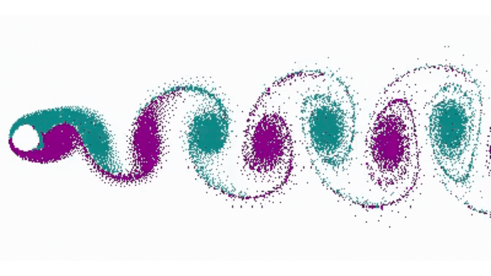

Climate Change in South Asia — What, Why, and How?
Climate Change in South Asia — What, Why, and How?

Unraveling the complexities of the Climate System - Understanding the fundamentals
Getting Customized Data for Climate-Adaptive Stratergies and Solutions

Towards Climate Information for Integrated Planning

Developing Models and Methods for Climate Analysis and Solutions
The current state of our planet—marked by rapid climate change and increasingly evident global warming—is one of the most pressing concerns facing humanity today.
As a young and developing nation, India stands at a critical juncture, balancing its aspirations for rapid economic growth with the urgent need for environmental sustainability. The goal of becoming a five-trillion-dollar economy by the late 2020s, and progressing toward a ten-trillion-dollar economy by 2032, will require transformative reforms in regulations, labour laws, privatization of public enterprises, and massive investments in infrastructure. However, it is essential that this growth is not achieved at the cost of our climate. Striking this balance is a complex challenge—one that demands coordinated efforts from both public and private sectors.
In this context, the DST Centre of Excellence in Climate Modeling was established at IIT Delhi in 2017 with support from the Department of Science and Technology, Government of India. The Centre was conceived to address critical climate challenges facing India and the surrounding region. Over time, the scope of the Centre has expanded. Today, it serves as a Centre of Excellence for Climate Information, focused on generating actionable intelligence to combat climate change and global warming, while advancing our understanding of the complex climate system.
Our team is uniquely interdisciplinary, comprising faculty and students from atmospheric and oceanic sciences, fluid mechanics and heat transfer, artificial intelligence and machine learning, optimization and operations research, sequential decision-making, and economics and business administration. This diverse expertise allows us to approach climate change not as a problem confined to one domain, but as a multifaceted challenge requiring integrated solutions.

For Actionable Climate Projections and Process Studies.

For Strategy Making and Policy Formulation.
To Advance the Knowledge of Climate Change.

Advanced statistical tools and machine learning interpretation.

To Combat Climate Change.

For Efficient and Effective Climate Actions.
Namdev, P., M. Sharan, S. K. Mishra | 2026 | International Journal of Climatology. (Accepted)
Bhuyan, D. P., P. Upadhyaya, R. Pathak, P. Namdev, P. Salunke, A. Anand, A. D. Suresh, A. Arora, S. K. Baraik, S. Jain, R. S. Parihar, A. Dwivedi, S. Sahany, M. Sharan, S. K. Dash, J. T. Fasullo, S. K. Behera, J. Tribbia, S. K. Mishra | 2026 | Bulletin of the American Meteorological Society
Mishra, S. K., P. Upadhyaya, A. Arora, A. J. Vinod, N. Jayan, A. Dwivedi | 2025 | The India Forum
Pathak, R., S. Sahany, S. K. Mishra, J. Wang | 2025 | Scientific Reports
Baraik, S. K., R. S. Parihar, S. Sparrow, P. Salunke | 2025 | iScience
Namdev, P., M. Sharan, S. K. Mishra | 2025 | Atmospheric Research
Dixit, A., S. Sahany, S. K. Mishra, F. Lehner | 2025 | Journal of Hydrometeorology
Tyagi, S., S. Sahany, D. Saraswat, S. K. Mishra, A. Dubey, D. Niyogi | 2024 | International Journal of Climatology
Upadhyaya, P., S. K. Mishra, J. T. Fasullo, In-Sik Kang | 2024 | npj Climate and Atmospheric Science
Namdev, P., M. Sharan, P. Srivastava, and S. K. Mishra | 2024 | Geoscientific Model Development
Namdev, P., M. Sharan, and S. K. Mishra | 2024 | Boundary Layer Meteorology
Tyagi, S., S. Sahany, D. Saraswat, S. K. Mishra, A. Dubey, and D. Niyogi | 2024 | Journal of Applied Meteorology and Climatology
We invite researchers from natural science and pertaining interdisciplinary areas to join the DST Centre of Excellence for Climate Information. Currently, we are looking for candidates having some similarities with our research area.
The research positions in these areas are available at various levels, e.g., Junior Research Fellow, Senior Research Fellow, Project Associate, Research Associate. The qualification for these positions is as per Institute and DST’s guidelines. The salary for these positions is based on qualification and experience.
Besides, we host short and long-term visitors and will be more than happy to welcome you if you want to visit for research collaborations; in that case please feel free to contact Dr. Saroj Kanta Mishra at skm@iitd.ac.in.